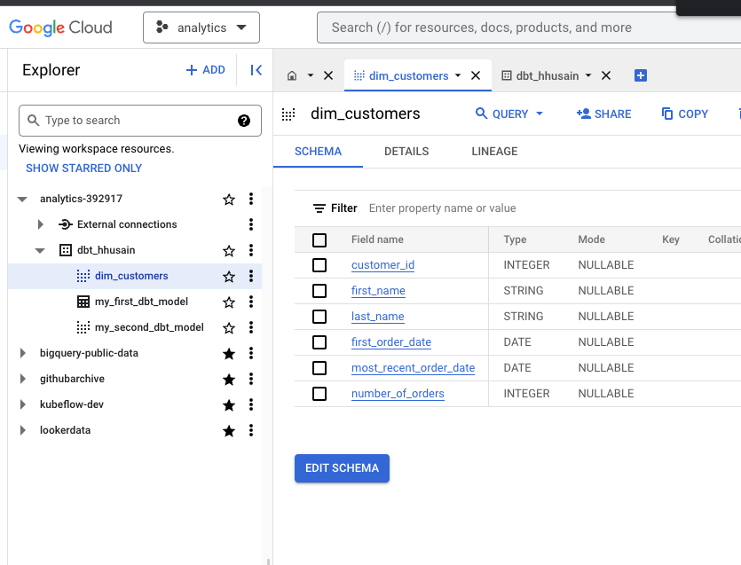
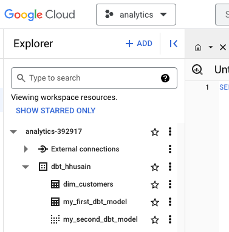
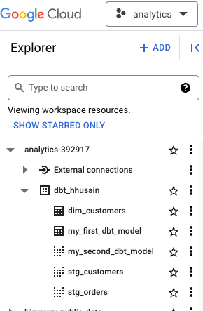
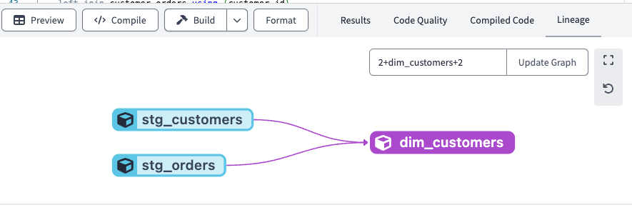
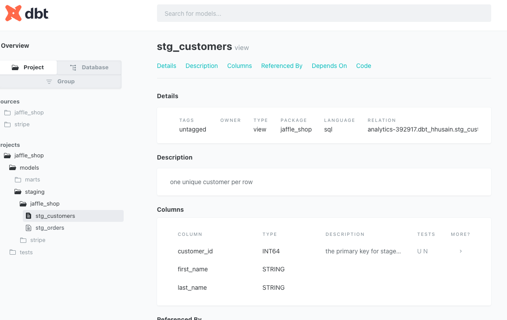
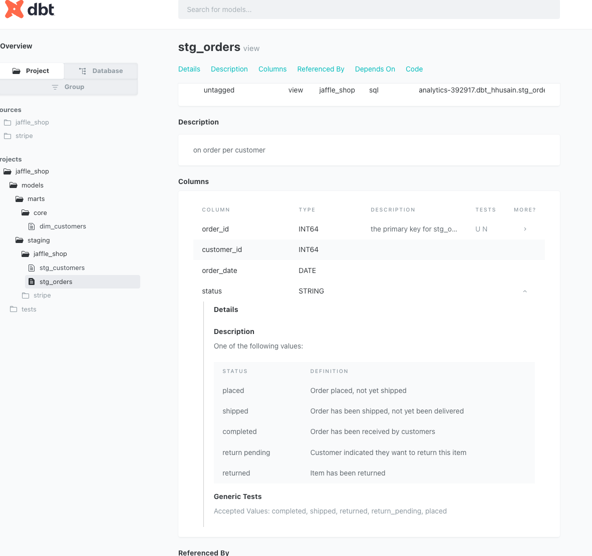

dbt
These are notes on how to use dbt, an increasingly popular data ELT tool (yes it’s called ELT nowadays, not ETL). Here is a refernce to read more about dbt.
Setup
- Setting up dbt cloud to work with BigQuery is pretty tricky using their docs. I found this playlist to be better.
- I tried the quickstart but didn’t really benefit much from it. I found this course and it was much better.
Building your first model
We can run the below query in BigQuery, which is a data transformation using SQL.
with customers as (
select
id as customer_id,
first_name,
last_name
from dbt-tutorial.jaffle_shop.customers
),
orders as (
select
id as order_id,
user_id as customer_id,
order_date,
status
from dbt-tutorial.jaffle_shop.orders
),
customer_orders as (
select
customer_id,
min(order_date) as first_order_date,
max(order_date) as most_recent_order_date,
count(order_id) as number_of_orders
from orders
group by 1
),
final as (
select
customers.customer_id,
customers.first_name,
customers.last_name,
customer_orders.first_order_date,
customer_orders.most_recent_order_date,
coalesce(customer_orders.number_of_orders, 0) as number_of_orders
from customers
left join customer_orders using (customer_id)
)
select * from finalSave the above SQL into dbt cloud as models/dim_customers.sql. You can preview it but also run dbt run, which will create a view. If we look at the detailed logs you will see something that looks like this:
create or replace view `analytics-392917`.`dbt_hhusain`.`dim_customers`
OPTIONS()
as with customers as (
...If we navigate to BigQuery, we will see this view:

If you want to create a table instead of a view, you have to edit the config block, which is special dbt code at the top of the SQL file:
--models/dim_customers.sql
{{
config(
materialized='table'
)
}}Now if you run dbt run again, you will see from the logs that it creates a table instead of a view:
create or replace table `analytics-392917`.`dbt_hhusain`.`dim_customers`
...Now we can see that the view is now a table named dim_customers:

When you run dbt run, it runs all models in your project. If you only want to run a specific model, you can run dbt run --select dim_customers.
Modularity
We can break up the above SQL into separate files. We can create a file called models/stg_customers.sql and paste the following SQL into it:
with customers as (
select
id as customer_id,
first_name,
last_name
from dbt-tutorial.jaffle_shop.customers
)
select * from customersWe can do the same thing with orders and create the file models/stg_orders.sql:
with orders as (
select
id as order_id,
user_id as customer_id,
order_date,
status
from dbt-tutorial.jaffle_shop.orders
),
select * from ordersWe can now refactor models/dim_customers.sql to use the above two files:
--models/dim_customers.sql
{{
config(
materialized='table'
)
}}
with customers as (
select *from {{ ref('stg_customers') }}
),
orders as (
select * from {{ ref('stg_orders') }}
),
...Now if we run dbt run, we will see that it creates the stg_customers and stg_orders views and then creates the dim_customers table.

If you look at the lineage view in the dbt cloud, you will see that dim_customers depends on stg_customers and stg_orders:

Naming Conventions
- Sources: raw data that is already loaded - usually comes from a data loader like Fivetran.
- Staging: 1:1 with source tables, but with some transformations
- Intermediate: models between staging and final tables.
- Fact: Things that are occurring or already occurred (e.g. sales, orders, etc.)
- Dimension: Things that describe facts (e.g., customers, products, etc.)
We can let these conventions inform folder structure:
├── models
└── marts
└── core
└── dim_customers.sql
└── staging
└── jaffle_shop
├── stg_customers.sql
└── stg_orders.sql We can change sections of our dbt_project.yml file to reflect this:
name: 'jaffle_shop'
version: '1.0.0'
config-version: 2
...
models:
jaffle_shop:
# Applies to all files under models/example/
marts:
core:
+materialized: table
staging:
+materialized: viewNow we know that everything in the staging folder will be a view and everything in the marts/core folder will be a table.
Sources
You want to make sure your dbt models don’t break when your table names to change. You can use sources to do this. We can create a file called models/staging/jaffle_shop/src_jaffle_shop.yml and paste the following into it:
version: 2
sources:
- name: jaffle_shop
database: dbt-tutorial
schema: jaffle_shop
tables:
- name: customers
- name: ordersNow we can update models/staging/jaffle_shop/stg_customers.sql to use the source using the source() function. The arguments to the source function are (name, table_name):
with customers as (
select
id as customer_id,
first_name,
last_name
from {{ source('jaffle_shop', 'customers') }}
)When you configure sources, you get a green node in the lineage graph.
Source freshness
The freshness config can be added to models/staging/jaffle_shop/src_jaffle_shop.yml, and must reference a field in the table via loaded_at_field:
version: 2
sources:
- name: jaffle_shop
database: dbt-tutorial
schema: jaffle_shop
tables:
- name: customers
- name: orders
loaded_at_field: _etl_loaded_at
freshness:
warn_after: {count: 12, period: hour}
error_after: {count: 24, period: hour}In the above example, the freshness applies to the orders table. You can run the dbt source freshness command to see the freshness of your sources:
> dbt source freshness
...
17:52:22 1 of 1 WARN freshness of jaffle_shop.orders .................................... [WARN in 1.32s]
17:52:22 Finished Tests
There are two kinds of tests: Singular and Generic.
Singular tests are one-offs that are specific to data.
Generic includes the following four tests unique, not_null, accepted_values, relationships. There are dbt packages that expand this.
Generic Tests
We can add a unique test to models/staging/jaffle_shop/stg_jaffe_shop.sql:
version: 2
models:
- name: stg_customers
columns:
- name: customer_id
tests:
- unique
- not_null
- name: stg_orders
columns:
- name: order_id
tests:
- unique
- not_null
- name: status
tests:
- accepted_values:
values:
- completed
- shipped
- returned
- return_pending
- placedYou can run the test by calling
dbt test
You can also test a specific model by calling:
dbt test --models stg_customers
Singular Tests
We can add a test in tests/assert_positive_total_for_payments.sql:
with payments as (
select * from {{ ref('stg_payments') }}
)
select
order_id,
sum(amount) as total_amount
from payments
group by order_id
having not(total_amount < 0)If there are any rows returned, the test will fail. You can see this by looking at the detailed logs of the test.
select
count(*) as failures,
count(*) != 0 as should_warn,
count(*) != 0 as should_error
...It knows that this file is a test because of the configuration at the root of the project dbt_project.yml:
test-paths: ["tests"]
...Test Commands:
dbt testto runs all generic and singular tests in your project.dbt test --select test_type:genericto run only generic tests in your project.dbt test --select test_type:singularto run only singular tests in your project.
Testing Sources
You can test sources in the yaml file that configures the source, or as a separate file in the test path. If we want to add a test to models/staging/jaffle_shop/src_jaffle_shop.yml, we can add the following:
version: 2
sources:
- name: jaffle_shop
database: dbt-tutorial
schema: jaffle_shop
tables:
- name: customers
columns:
- name: id
tests:
- unique
- not_null
- name: orders
columns:
- name: id
tests:
- unique
- not_null
loaded_at_field: _etl_loaded_at
freshness:
warn_after: {count: 12, period: hour}
error_after: {count: 24, period: hour}We can execute this test with dbt test or just test sources with the command: dbt test --select source:jaffle_shop.
dbt build
dbt run runs your models dbt test runs your tests
dbt build combines the two. However, there is an issue with run followed by test, b/c what if a test fails? There is a chicken/egg problem. dbt build goes one layer at a time and executes tests followed by runs.
Documentation
You can add documentation to your models through same yaml file you use to define your tests in. You can add a description in various places, as demonstrated below:
version: 2
models:
- name: stg_customers
+ description: one unique customer per row
columns:
- name: customer_id
+ description: the primary key for stage customers
tests:
- unique
- not_null
- name: stg_orders
+ description: on order per customer
columns:
- name: order_id
+ description: the primary key for stg_orders
tests:
- unique
- not_null
- name: status
tests:
- accepted_values:
values:
- completed
- shipped
- returned
- return_pending
- placedYou can add more long-form documentation in the form of doc blocks:
We will create a new file named /models/staging/jaffle_shop/order_status_jaffe_shop.md and paste the following into it:
{% docs order_status %}
One of the following values:
| status | definition |
|----------------|--------------------------------------------------|
| placed | Order placed, not yet shipped |
| shipped | Order has been shipped, not yet been delivered |
| completed | Order has been received by customers |
| return pending | Customer indicated they want to return this item |
| returned | Item has been returned |
{% enddocs %}We can now add this to our stg_orders model above
...
- name: stg_orders
description: on order per customer
columns:
- name: order_id
description: the primary key for stg_orders
tests:
- unique
- not_null
- name: status
+ description: '{{ doc("order_status") }}'
tests:
...Generating Documentation
You have to run the command dbt docs generate to re-generate the docs. You can then find the descriptions you added on the docs page:

The doc block is rendered as well:

Deployment
You can run your dbt project in dev or production so that you can test your changes before you deploy it.
- commit your code to the main branch.
- Under the
deploymenu, create an environment in dbt cloud, I created one calledDeployment. There is already aDevelopmentenvironment by default. - Under the
deploymenu, create a job. Configure the triggers as desired. - Under the
deploymenu, select jobs and then select the job you just created. Clickrun nowto run the job.
This is kind of like Airflow in the sense that this will orchestrate your data pipelines to run.
I couldn’t quite figure out how to configure environments. I followed the video but the user interface wasn’t the same. I wasn’t sure how to make such that you can only deploy to production from the main branch. This is worth investigating further.
Example dbt project
An example dbt project that has the code snippets used in this tutorial.